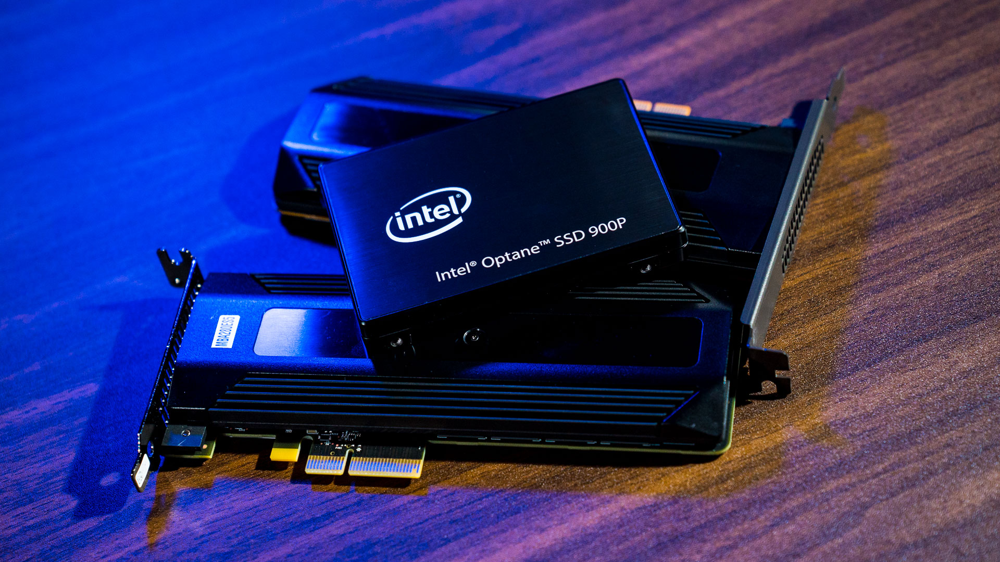
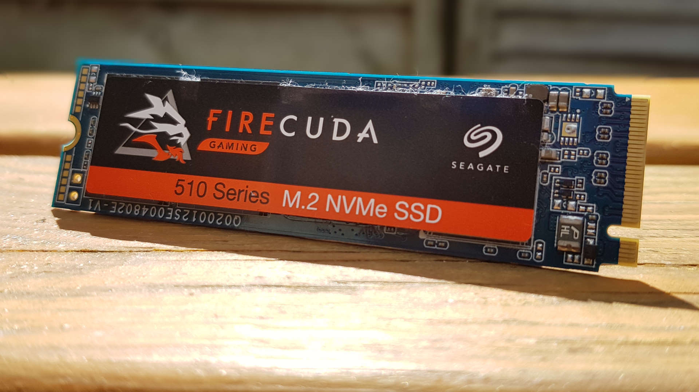
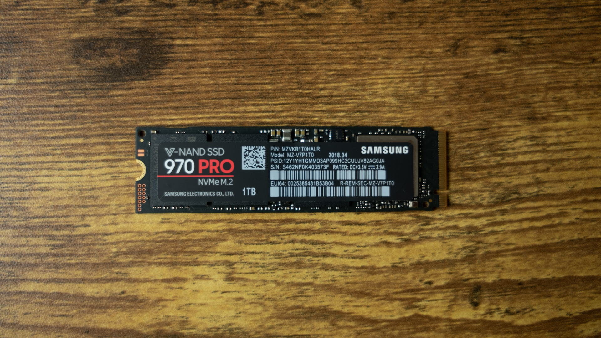

Karakteristike
Solid state drives ili SSD su uređaji visokih performansi za čuvanje podataka u računarima. Oni nude mnogo veće brzine prenosa podataka od tradicionalnih hard diskova, a troše manje energije i imaju veći stepen pouzdanosti zahvaljujući tome što nemaju pokretnih dijelova. Ovi atributi čine ih izuzetno atraktivnim za one koji koriste mobilne računare, ali nalaze svoje mjesto i kod desktop računara.
Solid state drive (SSD) je termin koji se odnosi na elektronske sklopove koji su u potpunosti izgrađeni iz poluprovodnika. Termin se prvobitno koristio za definisanje elektronike kao što je tranzistorski radio koji je koristio poluprovodnike umjesto vakumske cijevi. Većina elektronike koju imamo danas izgrađena je od poluprovodnika i čipova. U smislu SSD-a, to se odnosi na činjenicu da je primarni medij za pohranu preko poluvodnika, a ne magnetni medij kao što je slučaj kod hard diska. Ova vrsta skaladištenja podataka već postoji u obliku fleš memorijskih uređaja koji se priključuju na USB port. To je djelomično istina, kao i SSD, i USB flash uređaj koristi isti tip non-volatile memorijskih čipova da zadrže informacije, čak i kada nemaju napajanje. Razlika je u obliku i kapacitetu uređaja. Dok je fleš disk dizajniran da bude eksterni dio u računarskom sistemu, SSD je dizajniran da se nalazi unutar računara umesto tradicionalnijeg hard diska. Zašto koristiti Solid State Drive? Solid state drive ima nekoliko prednosti u odnosu na magnetne hard diskove. Uređaj nema pokretne dijelove. Dok tradicionalni hard disk posjeduje pogonske motore za obrtanje magnetnih diskova i pogonskih glava, kompletnom memorijom na SSD-u upravljaju fleš memorijski čipovi. To pruža tri različite prednosti, kao što je manja upotreba energije, brži pristup podacima i veću pouzdanost.
Upotreba energije je ključna za korišćenje SSD uređaja u prenosivim računarima. Pošto nema potrebe za pokretanjem, uređaj koristi mnogo manje energije nego regularni hard disk. Industrija pokušava da se time pozabavi pomoću nagnutih uređaja i razvoja hibridnih hard diskova, ali oba i dalje koriste više energije. SSD će kozistentno izvlačiti manje energije nego tradicionalni i hibridni hard disk. Brži pristup podacima će učiniti ljude srećnim. Uređaj ne mora da spinuje diskove uređaja ili pomjeri magnetne glave, podaci se odmah mogu čitati sa uređaja. Hibridni hard diskovi imaju tendenciju da ublaže aspekt brzine kada se radi o često korišćenim uređajima. Slično tome, Intelova nova Smart Response tehnologija je sličan način keširanja na malom SSD uređaju da bi dobili slične rezultate.
Pouzdanost je takođe ključni faktor za prenosive uređaje.
Hard diskovi su vrlo krhki i osetljivi materijali. Čak i mali pokret poput kratkog pada može dovesti do problema na uređaju.
Pošto SSD skladišti sve svoje podatke u memorijskim čipovima, ima manje pokretnih dijelova koji bi mogli da budu oštećeni.
Dok su mehanički SSD pogoni bolji, oni imaju ograničen životni vijek.
To je zbog fiksnog broja ciklusa pisanja koji se mogu izvršiti na uređaju prije nego što ćelije postanu neupotrebljive.
Međutim, za većinu potrošača, granice ciklusa pisanja još uvijek omogućavaju da uređaji traju duže od prosječnog računarskog sistema.
Zašto se SSD ne koriste za sve računare?
Kao i kod većine računarskih tehnologija, primarni ograničavajući faktor korištenja SSD uređaja u laptopu i desktop računarima je cijena.
Ovi uređaji su zapravo dostupni već neko vrijeme i dramatično im je cijena snižena, ali i dalje koštaju tri puta ili mnogo više od
cijene tradicionalnog hard diska za isti kapacitet skladištenja.
Kapacitet je takođe glavni faktor u prihvatanju SSD uređaja. Prosječni laptop računar opremljen SSD-om imaće oko 128 do 256GB memorije.
Ovo je otprilike jednako onome čime su laptopi prije nekoliko godina bili opremljeni. Danas,
većina laptopa ima 500GB ili više prostora za skladištenje sa hard diskom. Desktop sistemi imaju još veći disparitet između SSD i hard diskova,
dok prosječan desktop računar dolazi sa 1TB ili više memorije.
Čak i sa velikom razlikom u kapacitetu, mnogi ljudi smatraju da većina računara ima daleko više kapaciteta za skladištenje nego što im je stvarno potrebno.
Samo velika količina datoteka sa digitalnim fotografijama i video datotekama visoke definicije će brzo popuniti hard diskove.
SSD-ovi će uglavnom ponuditi dovoljan nivo skladištenja za većinu laptop računara.
Pored toga, spoljne opcije visokih performansi zahvaljujući USB 3.0, USB 3.1, pa čak i Thunderbolt-u brzo i jednostavno čine dodatni
prostor za pohranu pomoću eksternog hard diska za datoteke.
HARD DISK
Hard disk (tvrdi disk) je glavni, i obično najveći, uređaj za pohranu podataka u računaru.
Na hard disku su pohranjeni operativni sistem, softver kao i većina drugih datoteka.
Hard disk je takođe poznat kao HDD (skraćenica od Hard Disk Drive), tvrdi disk, fiksni disk.
Hard disk se često naziva i “C disk” s obzirom na činjenicu da je Microsoft Windows označavao slovom „C”
pogon primarne particije na primarnom hard disku na računaru po defaultu. Iako to nije tehnički ispravan pojam za korištenje, ipak je još uvijek čest.
Na primjer, neki računari imaju više slova (npr C, D, E), koji predstavljaju jedan ili više hard diskova.
Delovi hard diska
Hard disk se sastoji od 5 glavnih dijelova, a to su:
Magnetna ploča;
Magnetna glava za čitanje/pisanje;
Ruka pokretača;
Pokretač (aktuator);
Osovina
Unutrašnjost hard diska
Gledano izvana, na prosječnom hard disku se najpre uočava štampana ploča na kojoj su smještene komponente koje upravljaju radom
uređaja i obezbeđuju stabilno napajanje svih mehaničkih i elektronskih komponenti. Na ovoj ploči se nalaze stabilizatori napona,
kontroler, ROM u koji je smješten firmver (firmware) i RAM koji se koristi za keširanje podataka. ROM hard diska je posebno značajan
zato što pored firmvera sadrži i takozvane „adaptive”, podatke koji su različiti za svaki pojedinačni hard disk,
a koji omogućavaju da „baš ta glava radi baš sa tim motorom i baš tim pločama”.
Po otvaranju hard diska, prvo što upada u oči, jesu ploče na kojima se smeštaju podaci.
Moderni hard diskovi koriste ploče koje su najčešće izrađene od neke vrste plastike i presvučene slojem feromagnetnog materijala.
Pri izradi ploča se posebno obraća pažnja na njihov oblik: pored toga što moraju biti izbalansirane kako ne bi unosile
horizontalne vibracije u uređaj, tolerancija neravnina na površini je veoma mala.
Drugi dio hard diska, koji po otvaranju upada u oči, jeste ruka na kojoj se nalaze glave za čitanje i pisanje, kao i motor koji je pokreće.
Glave hard diska su izrađene na silicijumskim pločicama, izuzetno su malih dimenzija i osetljive su na oštećenja i prašinu.
Glave su sa rukom koja ih pokreće povezane preko klizača (slider). Klizači održavaju rastojanje između glave i ploča, a takođe,
u normalnim uslovima sprečavaju da glave padnu na ploče i tako se oštete. Pored elektronike koja ide uz glave i motor,
tu je sistem za zabravljivanje glave kada je parkirana, to jest kada je hard disk isključen. Pri isključenju hard diska,
glave se „parkiraju” odnosno pomjeraju na poseban dio ploča na kom se ne skladište podaci.
Kad se pogleda izvana, može se vidjeti da hard disk sa strana ima, unaprijed izbušene rupe sa navojima za
jednostavnu montažu u ležište od 3,5” u kućište računara ili 2,5” za laptope. Zadnji kraj hard diska sadrži priključak za
kabl koji se spaja na matičnu ploču. Vrsta kabla koja se koristi zavisi od vrste pogona, ali se gotovo uvijek dobija uz hard
disk prilikom njegove kupovine. Takođe, tu se nalazi i priključak za napajanje iz naponske jedinice.
Većina hard diskova ima jumpere na zadnjoj strani koji određuju kako će matična ploča prepoznati disk ukoliko ih je više od jednog.
Ove postavke se razlikuju od diska do diska tako da je potrebno da provjerite detalje sa proizvođačem hard diska.
Svi hard diskovi u kućištu računara su priključeni na matičnu ploču pomoću ATA, SCSI ili SATA kabla,
te se napajaju preko priključka za naponsku jedinicu – PSU (power supply unit). Neki desktop i laptop računari imaju novije
diskove koje se povezuju direktno na PCIe interface ili drugo, a ne koristite kabl.
Kako radi hard disk?
Stvar je – principijelno – jednostavna, elektronski dio kontroliše čitanje i pisanje podataka, dok motor pokreće ploče.
Naravno, sve je to napravljeno jako precizno. Magnetna ploča je skoro najbitniji dio, i taj dio se okreće.
Danas, najčešće brzine su 5400, 7200 i više RPM (rotacija po minuti),
dok se kazaljka (ili ruka aktuatora) kreće po ploči koja je izuzetno precizna i lagana, a uz to i brza.
Šta se pohranjuje na hard disk?
Hard disk se može koristiti za pohranjivanje bilo kakvih podataka, uključujući slike, muziku, video, tekstualne dokumente
i sve kreirane ili „skinute“ datoteke. Također, na hard disk se pohranjuju datoteke za operativni sistem i softverske programe računara.
Koje su veličine hard diskova?
Hard disk može da čuva više podataka nego bilo koji drugi disk, ali njegova veličina može varirati zavisno od vrste diska i njegove starosti.
Stariji diskovi su veličine od nekoliko stotina megabajta (MB) do nekoliko gigabajta (GB).
Noviji diskovi imaju veličinu od nekoliko stotina gigabajta do nekoliko terabajta (TB). Svake godine,
nova i poboljšana tehnologija omogućuje povećanje prostora za pohranu na hard disku.
Kada je u pitanju fizička dimenzija hard diska, postoje mnoge varijacije,
ali njihove fizičke veličine su obično ili 3.5” za desktop računare i 2.5” za laptop. Svi noviji SSD su 2.5” za desktop računare i laptope.
Eksterni i interni hard disk
Iako je većina hard diskova interna, postoje i samostalni uređaji koji se nazivaju eksterni,
koji mogu da čine backup podataka na računarima i proširiti raspoloživi prostor na disku.
Eksterni diskovi često se pohranjuju u posebno kućište koje štiti disk i omogućava povezivanje sa računarom,
obično preko USB-a ili eSATA. Eksterni hard diskovi dolaze u mnogim oblicima i veličinama.
Neki su veliki, veličine knjige, dok su drugi veličine mobitela.
Eksterni hard diskovi mogu biti vrlo korisni jer oni obično nude više prostora nego USB i još uvijek su prenosivi.
Dodatne karakteristike
Proizvođači:
A-Data Apacer Corsair Crucial Gigabyte Intel LC Power SiliconPower Verbatim Western Digital Kingston Transcend Patriot Samsung
Brzina čitanja:
do 1700 MB/s do 1800 MB/s do 2000 MB/s do 2100 MB/s do 2200 MB/s do 2500 MB/s do 3000 MB/s do 3100 MB/s do 3200 MB/s do 3550 MB/s
Format:
2.5" M.2 2242 M.2 2280 PCI-e card mSATA
Kapacitet:
120GB 128GB 240GB 250GB 256GB 280GB 480GB 500GB 512GB 960GB 1TB 2TB 4TB
Brzina pisanja:
do 1100 MB/s do 1200 MB/s do 1400 MB/s do 1900 MB/s do 2300 MB/s do 2600 MB/s do 2700 MB/s do 2800 MB/s do 2900 MB/s do 3000 MB/s
Galerija